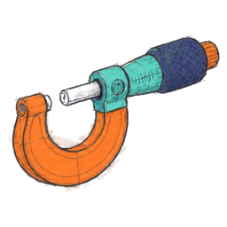
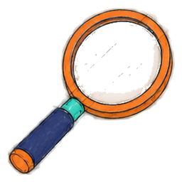
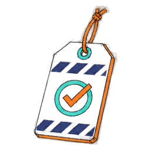

- Home
- SME Audit & Compliance
- Assess
- Improve
- Strengthen
SME Audit & Compliance
We help small and medium manufacturing enterprises find the gaps in their quality systems, manufacturing processes, engineering documentation and operational practices, then improve process control, documentation discipline, quality performance and readiness for customer audits.

Services
Choose the service that solves your actual problem.
we will not push a bigger packageQuality System Gap Assessment
Identify gaps between your quality practices and customer or applicable requirements.
View serviceManufacturing Process Audit
Evaluate how your processes actually run, and where they drift.
View serviceEngineering Drawing & Document Control Assessment
Make sure the right drawing and document is always the one in use.
View service
Inspection, Measurement & Traceability Assessment
Make inspection consistent and material traceable from receipt to dispatch.
View service
Nonconformance & Corrective Action Support
Root cause analysis, CAPA and follow-up so recurring problems stop recurring.
View serviceCustomer Audit Readiness Support
Prepare processes and evidence before the customer's auditor arrives.
View service
Periodic Quality & Compliance Improvement Support
Ongoing monthly or quarterly support so improvements keep going.
View serviceWho it is for
- Manufacturing SMEs and MSMEs
- Auto-component manufacturers
- Fabrication companies
- Machining and CNC companies
- Engineering component manufacturers
- Job-work and industrial suppliers
- Organisations supplying to larger OEMs
- Companies preparing for customer audits
SME audit framework
- Assess
- Identify gaps
- Action plan
- Implementation
- Monitor
How an engagement runs
Assess, analyse, improve, monitor.
Initial consultation
The company, its processes, customer expectations and concerns.
Assessment & evidence
Documents, records, processes and workplace practices reviewed.
Gap analysis
Nonconformities, weaknesses and opportunities against the agreed criteria.
Action plan
Findings prioritised, responsibilities and timelines recommended.
Implementation support
Documentation, corrective actions and process improvements.
Follow-up & review
Action closure checked and improvement evaluated.
Readiness support, not certification
Yantraya is not an accredited certification body and does not issue ISO or IATF certificates.
We do not promise that you will pass an audit, and we never create or backdate records.
Frequently asked questions
What is an SME quality system gap assessment?
A structured review of selected quality processes and records against agreed customer or applicable requirements. You receive evidence-based findings ranked by priority, together with an action plan.
Do you conduct manufacturing process audits?
Yes. We review a selected process in operation: its controls, parameters, records, inspection checkpoints and traceability, and report the gaps and improvement opportunities.
Can you review our engineering documentation?
Yes: drawings, revision control, numbering, approval workflow, master registers, BOMs, engineering change control, SOPs and work instructions.
Do you support customer audit preparation?
Yes: a pre-audit gap assessment, a review of the customer's requirements, evidence readiness, an audit checklist, mock audit support and tracking of observation closure.
Can you help with CAPA and root cause analysis?
Yes. We facilitate 5 Why and fishbone analysis, set up CAPA records and action trackers, and support effectiveness checks. Your authorised staff remain responsible for engineering decisions and product disposition.
Do you provide ongoing quality consultancy?
Yes, as periodic support with a defined number of reviews each month or quarter. The scope is agreed and quoted in advance.
Does Yantraya issue ISO certification?
No. Yantraya is not a certification body and does not issue ISO or IATF certificates. We provide audit-readiness and improvement support; certification decisions are made by accredited certification bodies.
Do you provide on-site assessments?
Yes. Most assessments include a site visit, agreed in advance and carried out under your safety, PPE and confidentiality rules. Some document reviews can be done remotely.
Talk to us about SME Audit & Compliance
Fees depend on scope, so we reply with a clear next step and a quotation where one is needed.
- Call+91 97252 04739
- WhatsApp+91 97252 04739
we usually reply the same working day